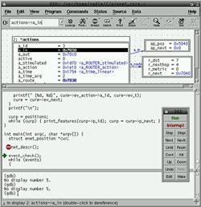
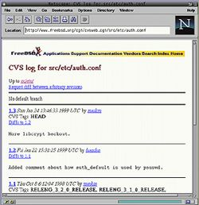

|
Нередко приходится слышать рассуждения типа: "FreeBSD - прекрасная
серверная платформа, но ей не место на рабочем компьютере. Повседневные
задачи среднему пользователю проще выполнять на операционных системах типа
Windows 98/NT". В ответ собеседник многозначительно кивает головой..
Но кто такой "средний пользователь"? Что такое "повседневные задачи"?
Что означает "проще"? Подразумевается, что ответ на эти вопросы очевиден.
Так ли это?
* * *
FreeBSD - UN*X-подобная операционная система, работающая на платформах
Intel x86 и Alpha. Подробнее об этой системе - ее возможностях, истории и
перспективах - можно прочитать в статье "BSD жила, живет и будет
жить". Несмотря на то, что она датирована 1997 годом и выпуск FreeBSD
3.* в ней только предвкушается, чтение может оказаться достаточно
занимательным. Может быть интересно также посетить web-сервер команды разработчиков FreeBSD и русский сайт, посвященный этой
операционной системе. Последняя версия системы на настоящий момент-
FreeBSD 3.2.
Безусловно, моя статья невероятно субъективна. Трудно оставаться
объективным, говоря о столь личных вещах! (Собственно, мы
именно субъективного взгляда от автора и хотели - прим. ред.) Я
использую FreeBSD в качестве настольной системы уже не первый год; также
на моем столе побывала OS/2, DOS и Windows (первая увиденная версия
Windows несла гордое имя "Microsoft Windows 2.0" и поставлялась в
комплекте с Aldus PageMaker). Попадались на жизненном пути и улыбающиеся
Маки. В силу специфики работы (компьютерные сети, администрирование,
программирование) также постоянно приходится иметь дело с Solaris, AIX и
Windows NT. Все это рассказывается для того, чтобы подвести к ключевой
мысли: FreeBSD - осознанный выбор. В ней мне хорошо и комфортно. Все,
сказанное ниже - не теория, не дань моде, а повседневность. Однако все
сказанное в статье применимо не только к FreeBSD, но и ко всему миру
открытых систем - например, к OpenBSD или столь модному сегодня
Linux'у.
* * *
Задумайтесь, почему общественное мнение (в формировании которого
немалую роль играет СМИ) воспринимает Windows 95/NT как единственную
систему для массового пользователя? Компьютерная индустрия в этом
отношении просто уникальна. Сравним, например, с рынком аудиотехники - там
прекрасно сосуществуют и дешевые корейские магнитолы, и музыкальные центры
среднего класса, и дорогие hi-end решения - каждый может выбрать по себе;
никому не приходит в голову, что одно решение можно навязать всем. Каждый
выбирает то, что ему нравится и подходит для его кошелька.
Я предпочитаю иметь выбор и делать его. Специфика компьютерной отрасли
такова, что качество и цена не всегда связаны (что, на самом деле,
грустно!). Поэтому вполне реально претендовать на решение "выше среднего"
по приемлемой цене (а то и бесплатно).
Итак, переходим к конкретике. Чтобы изложение было более полным,
приведу описание машины, которая в настоящий момент является моим рабочим
местом. Это Pentium-166, 64 MB RAM, 4 GB HDD, SoundBlaster AWE64, Diamond
Stealth 64 VRAM, IBM P70 17" monitor, Intel EtherExpress Pro 10/100B,
Logitech Trackman Marble FX (trackball); операционная система FreeBSD 2.*.
Вряд ли стоит упоминать, что работает весь этот комплекс очень стабильно,
перезагружаясь лишь тогда, когда этого хочу я, а не система.
Что мы видим в первую очередь, бросив заинтересованный взгляд на
соседний монитор? Внешние проявления. Интерфейс.
Этот спор вечен - CLI (интерфейс командной строки) против GUI
(графический интерфейс пользователя). Я больше склоняюсь в сторону CLI (он
быстрее, если только Вы не занимаетесь рисованием в Photoshop'е),
однако в работе пользуюсь и тем, и другим.
Я использую графическую систему X Window System; разрешение экрана -
1152x864, 16bit color. Внешний вид окон и экрана не "вшит" в систему
жестко и полностью определяется внешной программой, называемой "Диспетчер
Окон" (Window Manager); в зависимости от желания пользователя, его экран
может напоминать экран Windows'95, NeXT'а, Mac'а или выглядеть как-то еще.
Это удобная возможность позволяет подобрать для себя именно тот
"look-and-feel", которые тебя устраивает. Удобству и неудобству
графического интерфейса, мыслям по его обустройству можно посвятить
отдельную статью.
Я предпочитаю диспетчер окон fvwm2. Компактный, быстрый, надежный,
настраивающийся, он меня полностью удовлетворяет. Рабочее пространство
состоит из четырех виртуальных экранов, между которыми можно свободно
переключаться с помощью клавиш (или мыши).
Кстати, мышке я предпочитаю трекбол - но вполне конкретную модель,
Logitech TrackMan Marble
FX. Изумительная вещь.
Большую часть моего рабочего времени составляет редактирование текстов
(от исходного кода на Си до файлов конфигурации какой-либо системы),
поэтому удобный текстовый редактор - вещь немаловажная. Я предпочитаю vi,
вернее, его современную разновидность: VIM.
Vi, по мнению многих, слишком необычный и неудобный текстовый редактор;
система команд и идеология резко отличается от общепринятого (опять эти
обобщения!) подхода. Давно, в молодости, я выходил из редактора "vi" с
помощью кнопки Reset, потому что просто не мог понять, как это сделать
иначе.
Но необычность интерфейса не означает его неудачности. Взглянем на
интерфейс такого средства для создания письменных текстов, как
обыкновенный карандаш: мы тратим довольно большое количество времени на
то, чтобы научиться писать, но более никогда об этом не задумываемся. Мы
просто пишем! Вот он, идеальный интерфейс.
Текстовый редактор - важный инструмент, и я готов потратить некоторое
время на то, чтобы освоить его в совершенстве. Я совсем не хочу иметь
"интуитивно- понятный" редактор, который использует крупные пиктограммы и
меню. Мой любимый vim управляется исключительно с клавиатуры - мне даже не
нужно использовать мышь или стрелки. Работает vi на любой платформе
(знание vi - обязательное умение любого системного администратора);
потребляет мало ресурсов, позволяет работать очень быстро и эффективно
(после того, как он будет освоен, конечно :).
Я пользуюсь Vim'ом для программирования - у него прекрасная поддержка
свойственных для этого задач, от общепринятого выделения цветом синтаксиса
до специфических возможностей (например, находясь на переменной, я могу
мгновенно перескочить на ее определение). Я использую Vim для
редактирования HTML-страниц. Я использую Vim для сочинения рассказов. Я
использую Vim для всего!
Поскольку Unix задумывался как система работы с текстами/файлами,
средства работы с текстами (в том числе и для пакетной, неинтерактивной
обработки) в нем чрезвычайно развиты. Столкнувшись в Windows в
необходимостью переименовать три десятка файлов по некоторому принципу
(например, отрезать у всех файлов расширение ".gif" и приписать спереди
порядковый номер), чувствуешь себя как без рук без привычной Unix-оболочки
и стандартных Unix-средств. В FreeBSD на получение результата уходит менее
минуты.
Конечно, порой необходимо оформить тексты так, чтобы они красиво
выглядели на печати. Я использую для этого TeX, издательскую систему,
разработанную Дональдом Кнутом; для редактирования TeX-кода применяю тот
же vim (хоть пробовал и "более визуальную" систему Lyx). TeX распространяется в различных
дистрибутивах, я выбрал для себя TeTeX. Из LaTeX-файлов легко получить
хоть PostScript (который быстро и красиво распечатывается на нашем HP
LaserJet 5000L), хоть PDF. Если существующий принтер не поддерживает
PostScript, можно воспользоваться программным интерпретатором (например,
GhostScript от Aladdin
Software). Утилиты работы с TeX, PostScript очень мощны; например, для
того, чтобы напечатать существующий PostScript-файл в виде
книжки-брошюрки, необходимо выполнить лишь несколько команд (уменьшить
масштаб страниц, перетасовать их, развернуть четные и т.д.). Попробуйте-ка
добиться этого в Microsoft Word!
Мощь TeX'а в том, что это не просто способ раскрасить текст шрифтами,
но настоящая издательская система. Поэтому создаваемые документы (порой
имеющие сложную структуру) выглядят строго и красиво. При этом можно не
бояться, что файл по-разному распечатается на разных принтерах, что где-то
не прочитается... кроме того, можно сосредоточится на сути документа, а не
на его оформлении - TeX постарается все сделать сам.
TeX очень нетребователен к ресурсам машины. Компилятор TeX'а работает
без особых проблем на моей домашней 486DX2/66 16MB (под FreeBSD 3.*).
Теоретически можно использовать и любой из офисных пакетов, что
существуют под Unix - например, StarOffice, Applix или Corel WordPerfect.
Однако я сторонник старого доброго TeX'а и vim'а, как по идеологическим
(StarOffice должен был бы называться скорее "Windows'95 for Unix"), так и
по практическим причинам (нелюбовь к монстрообразности что StarOffice, что
Corel WordPerfect)...
Для создания растровой графики под Unix'ом обычно используют gimp, но получается так, что мне
практически не приходится этим заниматься. Если приходится - запускаю на
втором домашнем компьютере Photoshop, Illustrator или CorelDraw!
Однако просматривать картинки приходится часто и проблем с этим нет. В
последнее время появилось много новых программ просмотра графики, но я
по-старинке предпочитаю xv.
Он позволяет не только просмотреть картинку, но и поправить яркость,
контрастность, цветовой баланс... Для пакетной обработки ("сконвертировать
20 Photoshop-файлов в JPEG-файлы") исключительно удобно пользоваться
пакетом Image Magic.
Нет проблем и с программами просмотра других форматов; например,
PostScript я смотрю с помощью gv (он использует
GhostScript в качестве интерпретатора); для просмотра MPEG'ов можно
использовать xanim или
коммерческий MpegTV.
Переходим к Интернету; и начинаем с главного - с электронной почты. Моя
машина сама является почтовым сервером (я использую Postfix), и потому не зависит от
других. Приходящая почта автоматически фильтруется по различным признакам
и разбрасывается по различным папкам (с помощью procmail). Я подписан на несколько
списков рассылки с очень большим трафиком и без автоматической фильтрации
почты я бы, пожалуй, долго не прожил. Состояние папок всегда отображается
в левом верхнем углу экрана; я вижу, сколько непрочитанных писем лежит в
каждой папке; щелкнув левой клавишей, вижу заголовки писем; щелчок средней
клавишей автоматически запускает программу чтения почты (описываю это так
подробно, чтобы дать представление о том, что жить в FreeBSD не менее
удобно, чем в Windows).
Для чтения пришедших писем и написания ответов я использую mutt, очень мощную и функциональную
программу. Для чтения новостей используется slrn.
Web-браузеры - Netscape и
текстовый Lynx. Жду выхода Mozilla, очень хочется верить, что она
получится компактнее, "совместимее" и быстрее. Иногда нужны средства для
неинтерактивной работы с web (предположим, сделать копию какого-то набора
web-страничек) - для такого случая есть достаточно много программ, я
предпочитаю wget и w3mir.
Естественно, на компьютере работает локальный web-сервер, который несет
мою домашнюю страничку и который используется для различных проектов;
сервер называется boa, черезвычайно компактен и работает очень быстро
(впрочем, возможностей у него немного: статические html-странички и
CGI-скрипты). Boa я использую не потому, что не работает Apache (прекрасно
работает), а потому, что он мне очень нравится.
Для программирования я использую GNU C/C++ compiler, gdb (отладчик) и
порой DDD - графический интерфейс к gdb. На компьютере стоит система управления версиями
(CVS, RCS), что позволяет мне удобно
вести мои проекты.
В дереве CVS у меня хранятся и тексты программ, которые я пишу; и
документы, которые я создаю; и web-странички, что лежат у меня на сервере.
Очень удобно - всегда можно вернуться к предыдущей версии, посмотреть,
когда, что и где изменялось (для этого можно использовать web-интерфейс к
CVS, cvsweb.cgi).
 |
 |
|
DDD - графический интерфейс к отладчику
gdb |
Web-интерфейс к системе управления
версиями |
Я не играю на работе в игрушки, однако Doom, Quake и другие игры,
выпущенные под Linux, хорошо работают на FreeBSD. О качестве
linux-эмуляции говорит тот факт, что выпущенная недавно Quake3 preview
(Arena) прекрасно работает под FreeBSD: с графическим ускорителем, со
звуком.
Мощности компьютера вполне хватает на то, чтобы воспроизводить в
фоновом режиме mp3-файлы (с ними веселее :), тем более что проигрыватель
mpg123 (http://mpg.123.org) считается одним из лучших mp3 decode
engine.
Под FreeBSD не составляет сложности найти клиента для IRC или ICQ. Я
предпочитаю tirc.
Конечно, помимо пользовательских приложений, на системе работают и
системные программы - как уже упомнятые Postfix, Boa, анонимный ftp-сервер
и т.п. Несмотря на это, реакция системы на действия человека исключительно
достойна и быстра; интерактивная работа очень комфортна.
Все перечисленное выше программное обеспечение (за исключением
одной-двух программ) распространяется свободно.
Как уже было сказано, дома я использую FreeBSD на 486DX2/66 16RAM,
150MB HDD. Помимо всех своих обязанностей, эта машина играет роль
маршрутизатора с NAT (Network Address Translation) для нашей маленькой
домашней сети из 2-х машин (на второй работает Windows'95, сеть - 10 mbit
коаксиал). В результате и я, и моя жена можем пользоваться Интернетом
одновременно, что, несомненно, делает жизнь проще. В планах - поставить
VT100-терминал для кошки.
Установка ПО очень проста - FreeBSD обладает специальной системой "ports and packages", позволяющая
установить программное обеспечение одной-двумя командами. Выбор его
чрезвычайно широк. Система поставляется с полными исходными текстами, и Вы
всегда можете обратиться к ним, чтобы понять, как работает какая-то
конкретная утилита или поправить что-нибудь (естественно, это требует
соответствующей квалификации).
Таким образом, мне полностью хватает FreeBSD в моей повседневной жизни.
Я надеюсь, что эта маленькая статья поможет Вам поверить, что жить под
FreeBSD комфортно и приятно. Почему бы это не попробовать и Вам?
Дружелюбный мир открытых систем и свободного программного обеспечения ждут
Вас!
Вадим Колонцов
[email protected] |